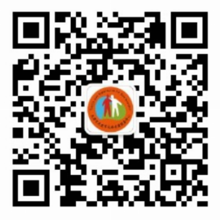

天津市友爱罕见病关爱服务中心（Tianjin Love and Care Service Center For Rare Disorders 简称TCRD），原名天津血友病联谊会，是由血友病患者于2003年4月自发成立的民间公益组织，主要从事血友病等罕见病群体的关怀和服务工作，并通过知识宣传和政策倡导，促进社会公众对血友病等罕见病群体的了解和关爱，改善血友病患者的生活质量，维护该群体在医疗、教育、就业、社会保障等方面的合法权益，推进罕见病防治与关怀事业的进步与发展。
我们的愿景：人人享有免费治疗，消除残疾和歧视，实现平等与共享。
我们的使命：通过社会化服务与政策倡导，改善罕见病群体的生活质量，共享社会文明的进步与发展。
我们的口号：“爱让我们的血凝聚!” Love makes our blood coagulate!
我们的工作与任务：
患者教育与咨询服务；社会宣传与政策倡导；
权益维护与关怀救助；信息交流与赋能培养。
包括：
1、开展血友病等罕见病知识的宣传与教育活动，提高社会知晓率；
2、 开展血友病等罕见病群体的健康咨询，心理关怀和医疗服务工作，提高患者对疾病的了解与康复能力；
3、倡导社会对血友病等罕见病群体的关爱，开展针对该群体的扶危救困工作，改善他们的生活环境；
4、推动政府出台针对血友病等罕见病患者在医疗、教育、就业等方面的优惠政策，促进人权平等；
5、 建立血友病等罕见病群体的网络交流平台，推动信息交流和经验共享，推动全国各个地区均衡发展；
6、协助医院等相关机构开展血友病等罕见病群体的调研与临床试验工作，促进药物研发与治疗水平的提高；
我们的成绩：
十几年来，经过我们的不懈努力，天津市的血友病患者在治疗、教育、社会保障等方面都取得了巨大变化，人人享有医保、门特和大病救助，药物供应充足而稳定，残疾率下降，许多特困家庭享有低保，患者的生活、教育和就业水平显著提高。主要项目如下：
1、2011年到2013年，我们开展过壹基金海洋天堂计划——血友病儿童救助项目；共救助了100名全国各地的血友病儿童，救助金额达到了50万元。
2、2014年，开展壹基金受助儿童夏令营活动，组织外地受助儿童来天津参观学习；
3、从2003年开始，连续14年举办“世界血友病日”（4月17日）主题宣传活动；
4、从2011年开始，连续6年举办“国际罕见病日”（2月28日）主题宣传活动。
5、2016年，开展血友病医保政策示范推广项目，在青海、宁夏、内蒙和河北省组织血友病医保政策研讨会，宣传推广天津市等国内先进地区的血友病医保政策，帮助这4个省的血友病患者组织开展工作。
6、2016年，中标了天津市社团局发起的公益创投项目，开展血友病患者职业技能培训，共培训了45名血友病患者，并帮助他们网上创业。
联系我们：
办公地址：天津市河东区大直沽福泽温泉公寓4-5-305
办公电话/传真：022---24147728
负责人：王立新 手机：18622027181
邮箱：wanglixin66@163.com
网址：www.yajy.org
微信公众号：tianjinxueyou

支持我们：
开户名：天津市友爱罕见病关爱服务中心
开户银行：中国银行 天津大桥道支行
账号：2752 7772 4658
支付宝账号：lixin1966@vip.qq.com